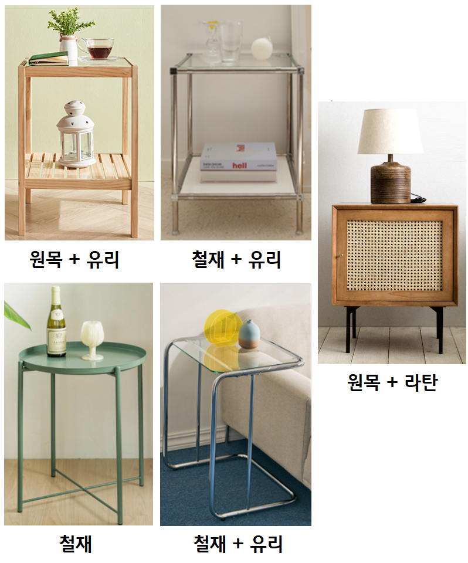

숙소에 없어서는 안 될 품목에는 어떤 것들이 있을까요?
셀프 인테리어 시 반드시 필요한 가구 3가지를 선정 및 구매 꿀팁을 기재해두었으니, 구매시 참고하여 실패없는 소비하시기바랍니다.
2.협탁

협탁은 숙박시설에 가면 무조건 있는 필수가구입니다. 침대의 단짝이라고 할 수 있죠.
주로 침대 옆(머리 맡)에 배치하여 티슈나 단스탠드, 탁상시계등 필요한 비품들을 올려놓는 용도입니다.
공간이 협소하여 협탁을 놓을 공간이 없다면, 사이드테이블을 놓는것도 방법입니다.
(사이드테이블은 슬림하고 이동하기 편해서 활용도가 꽤 높습니다.)
협탁의 소재
협탁은 침대프레임을 구매할 때 세트로 구매하면 간편하지만 가격대가 부담스러운 경우, 별도로 구매하셔도 좋습니다.
이때 고려해야할 점은 바로 '침대 프레임과의 조화'입니다.
제아무리 예쁜 협탁이라 할지라도 어울리지않다면 생경한 느낌이 들기때문입니다.
또한 사용된 소재에 따라 풍기는 분위기가 천차만별이므로 '소재의 조합'을 고려하여 고르면 실패할 일은 없습니다.
원목+유리의 조합
따뜻한 원목에 클리어한 유리를 조합하여 트렌디한 느낌을 잘 살린 가구라고 할 수 있습니다.
가구 전체를 원목으로 할 경우 계절을 많이 타고 다소 답답해보일 수 있지만, 유리를 조합을 하게 되면 사계절내내 두루 잘 어울리는 무난한 제품이 됩니다.
가격 역시 저렴하여 부담없이 구매 가능합니다.
철재(스틸)+유리의 조합
요즘 가장 트렌디한 모듈가구에 주로 쓰이는 소재의 조합이라고 할 수있습니다.
내구성이 탄탄한 철재 위에 유리판을 얹은 형식으로, 다소 불안정하지만 디자인만큼은 깔끔하면서 세련되어
모던컨셉에 무난하게 잘 어울리는 제품입니다.
철재(스틸)
가구 전체에 철재를 사용할 경우 라이트한 분위기를 풍깁니다. 가볍고 이동하기도 편하며 내구성도 좋습니다.
무엇보다 다양한 버전의 컬러 제품을 구매할 수 있기때문에 선택의 폭이 넓습니다.
가격은 타소재들에 비해 매우 저렴한 것이 특징입니다.
단점이라고 한다면, 너무 가벼운느낌입니다. 고급스러운느낌과는 거리가 멀어서 빈티가 날 수 있습니다.
철재(스틸)+유리의 조합
위에 언급된 것과 같은 소재의 조합이지만 사이드테이블로써 협탁이라기보단 보조 테이블의 느낌이 강합니다.
(주로 침대헤드 옆, 쇼파 옆에 놓고 사용합니다.)
철재와 유리를 사용하여 깔끔하면서도 무난하여 부담없이 사용할 수 있습니다.
원목+라탄의 조합
북유럽 컨셉 및 휴양지 컨셉으로 인테리어를 하는 분들께 사랑받는 소재의 조합이 바로 원목+라탄입니다.
밋밋한 원목가구에 포인트를 주며, 이국적인 분위기를 풍기기 때문입니다.
굳이 단점을 꼽으라면 테이블상단이 라탄으로 된 제품으로 구매할 경우 얇은 짜임으로 인해 내구성이 약한 정도입니다.